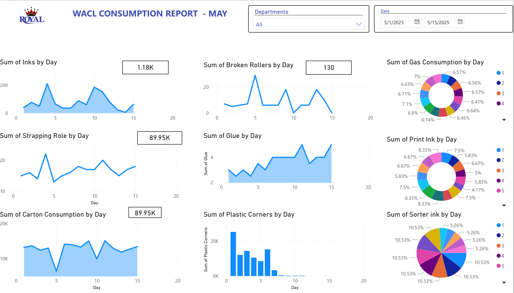
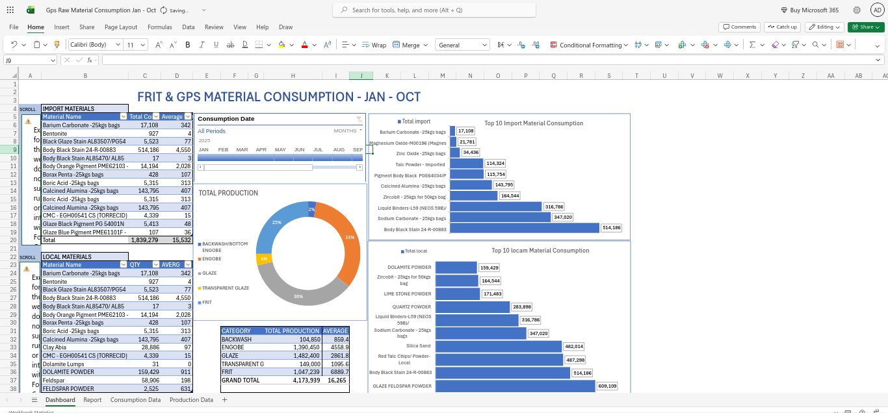
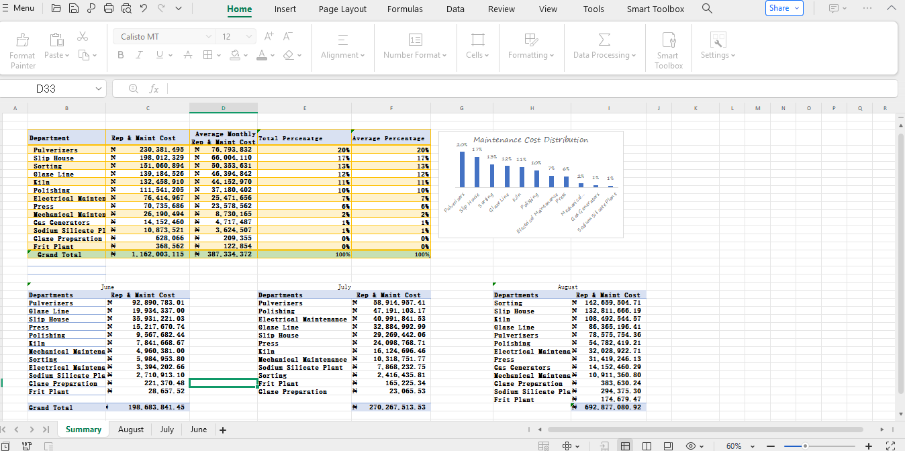

Data Analyst specializing in Supply Chain, Manufacturing KPIs, and ERP systems. Bridging the gap between raw data and actionable strategy.
Based in Abuja, Nigeria, I work at the intersection of Computer Science and Industrial Operations. Currently at West African Ceramic Limited, I manage end-to-end data workflows—from ERP extraction (Orion) to executive Power BI dashboards.
I believe that "Small data" managed well is more valuable than "Big Data" ignored. My mission is to optimize production, reduce waste, and help teams move faster using evidence.
Querying & ETL
Pandas & NumPy
DAX & Modeling
Systems Admin
A selection of my recent industrial data projects.

Automated reporting for production output, downtime, and rejection rates.
View Technical Docs
Analysis of usage trends leading to a 12% reduction in material waste.
View Technical Docs
Cost analysis of spare parts consumption to optimize maintenance schedules.
View Technical Docs